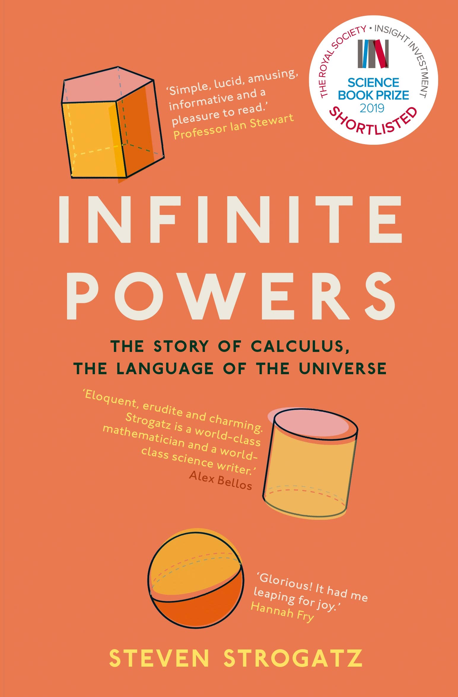
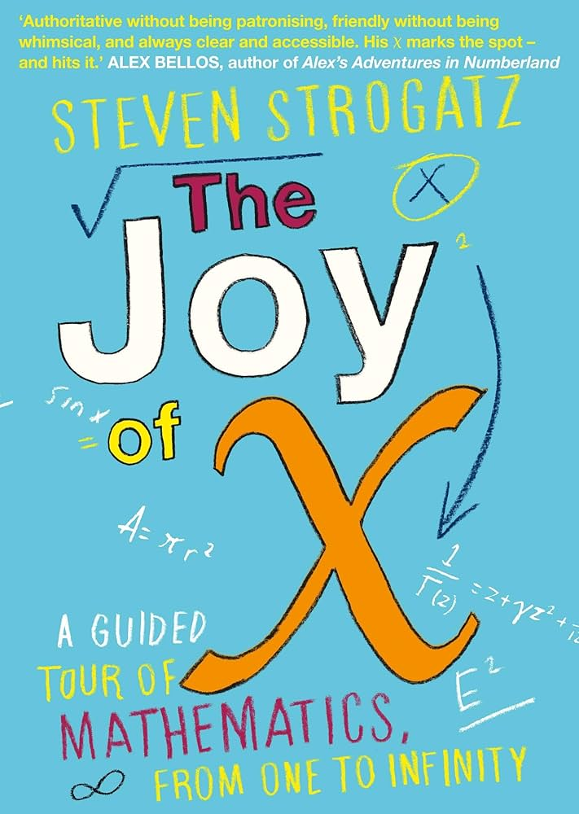

Infinite Powers
This book beautifully reveals how calculus shapes our world, from physics to economics, from medicine to machine learning.
Written by the legendary Steven Strogatz, it's a journey into how infinitesimals helped humans model change, motion, and reality itself.
The Joy of x
A wonderful introduction to the magic of mathematics in everyday life. With clarity and humor, Strogatz explores how numbers, patterns, and logic are all around us — even in love and politics.

The Truth Detective
Tim Harford masterfully shows how statistical thinking and data can help uncover truth in a world of misinformation. A must-read for those who want to think clearly and critically about the world.